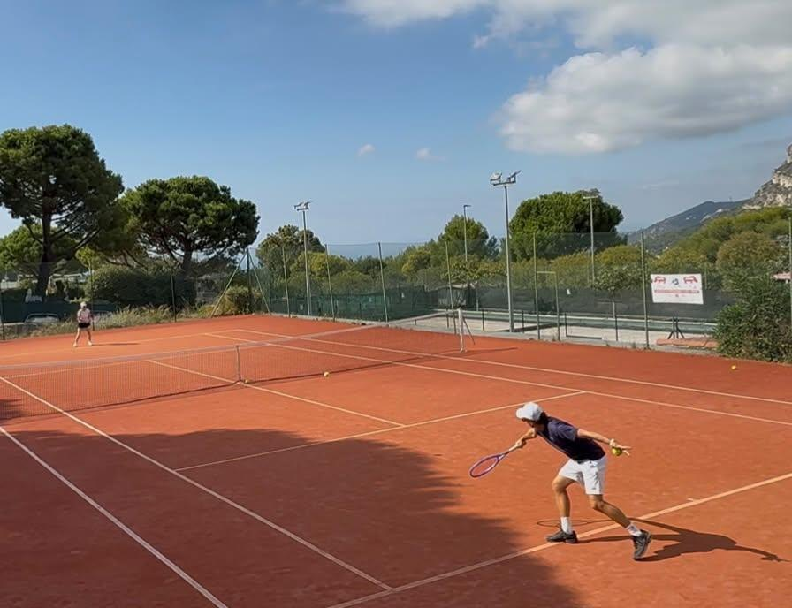

Vous cherchez un coach de tennis privé à Nice ? Je viens sur votre court, dans une villa, une résidence ou un hôtel, pour des leçons d'une heure construites autour de votre niveau.
À Nice, je donne des cours à des résidents qui veulent progresser sur la durée et à des personnes en vacances qui veulent profiter d'une heure de tennis.
Villa, résidence ou hôtel avec court : je viens sur place avec les balles.
Écrivez-moi en indiquant où vous êtes : je vous propose une solution à Nice.
Un coup droit qui ne part pas comme vous voulez, un service à reprendre : on y travaille précisément, à votre rythme.
Vous êtes en vacances et voulez simplement bien jouer : la séance s'adapte pour que ce soit un vrai plaisir, en français, anglais ou italien.
Cours de tennis privé à Nice, à domicile
Nice est ma base sur la Côte d'Azur. Je donne des cours particuliers de tennis à Nice sur votre court privé, dans une villa, une résidence ou un hôtel, de la Promenade des Anglais à Cimiez, et jusqu'à Villefranche-sur-Mer, Beaulieu et Cap Ferrat. En français, anglais ou italien.
Cours de tennis privés à Nice pour résidents, expats et touristes
Les résidents cherchent en général de la régularité : une leçon par semaine, des objectifs clairs et un suivi d'une séance à l'autre. Les visiteurs, eux, veulent surtout jouer et prendre plaisir pendant leur séjour, avec un ou deux conseils utiles.
Dans les deux cas, la leçon part de votre niveau. On peut travailler un point technique précis ou simplement jouer, en français, en anglais ou en italien.
Je me déplace à Nice et dans les communes proches, de Villefranche-sur-Mer à Beaulieu-sur-Mer et Saint-Jean-Cap-Ferrat.
Tennis Lessons at Villas and Hotels in Nice
Si votre villa, votre résidence ou votre hôtel dispose d'un court, la leçon se fait sur place : vous n'avez pas à vous déplacer.
C'est souvent la solution la plus simple pour les familles en vacances : parents et enfants peuvent jouer à la suite ou ensemble, chacun à son niveau.
Les horaires se fixent ensemble, selon vos disponibilités et celles du court.
Votre coach
Massimo Bettini, coach certifié FITP (IS1 et IS2), 10 ans d'enseignement, coordinateur de l'organisation de l'ATP Challenger de Vicence. Cours en français, anglais et italien.
Ce qu'en disent mes élèves
5,0 · 31 avis Google
“I had the pleasure of training with Massimo several times during my stay on the French Riviera, and I honestly couldn’t have asked for a better coach. […] Every lesson was thoughtfully structured, and he has an exceptional ability to identify the few adjustments that make the biggest difference. […]”
“I had 3 sessions with Massimo over the course of the week in Nice in preparation for a tennis tournament a week later. He was a fantastic coach, showing me several little tweaks that were easy to implement and immediately improved my game. […] 10 / 10. Highly recommend!!”
“Coach Massimo was fantastic to work with during our son’s lessons while we were visiting the French Riviera. He quickly understood our son’s game, communicated clearly, and struck a great balance between being positive, professional, and demanding in the right way. […] We would highly recommend Massimo to any visiting family looking for high-quality coaching and would gladly book with him again.”
“It was an absolute pleasure to do lessons with Massimo. He is incredibly professional and a fantastic coach. I would highly recommend him to anyone looking for a coach.”
Questions fréquentes
Réservation
Réserver à Nice
Écrivez-moi avec le lieu, vos disponibilités et le nombre de joueurs. Je vous réponds sous 24 heures.
← Découvrir tous les services sur la Côte d'Azur
Je propose également des cours privés de tennis à Antibes, Valbonne, Monaco, Cap Ferrat